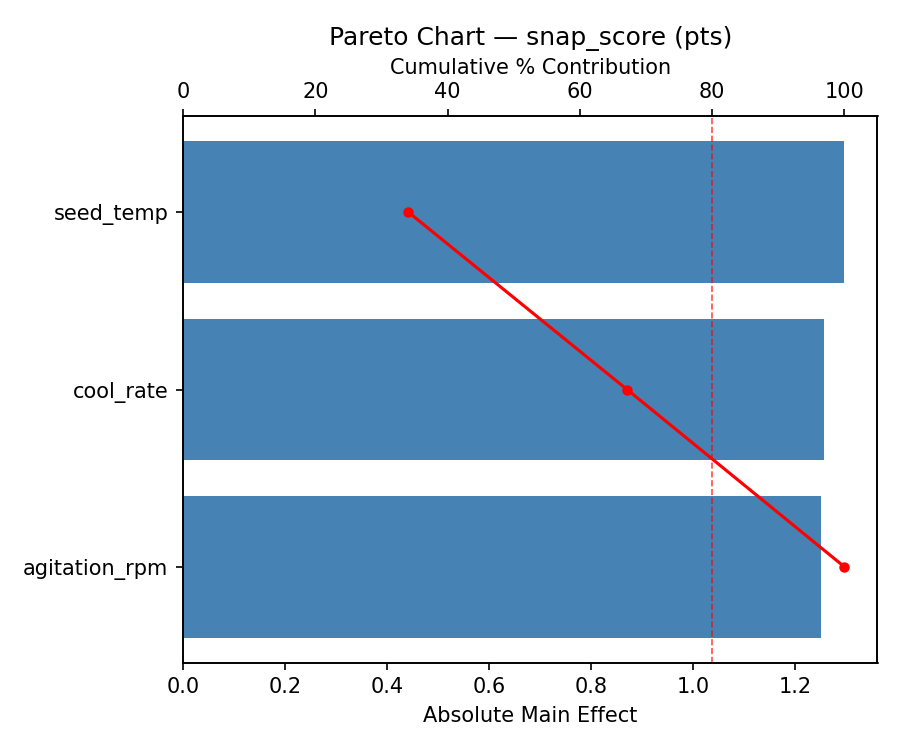
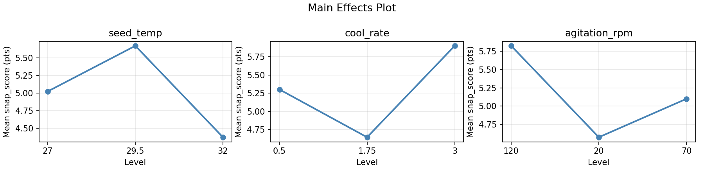
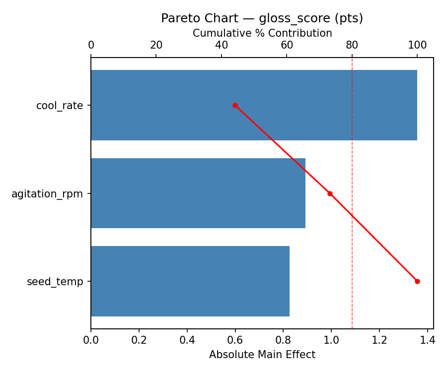
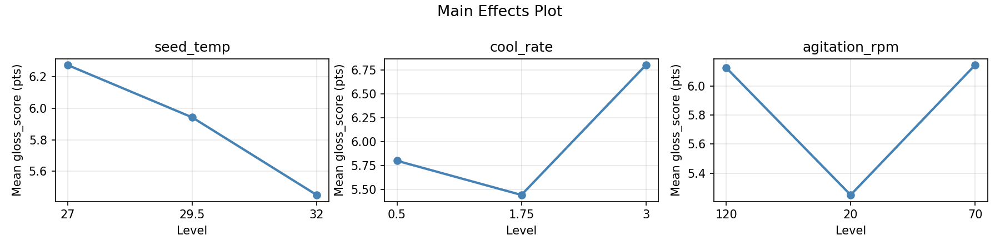
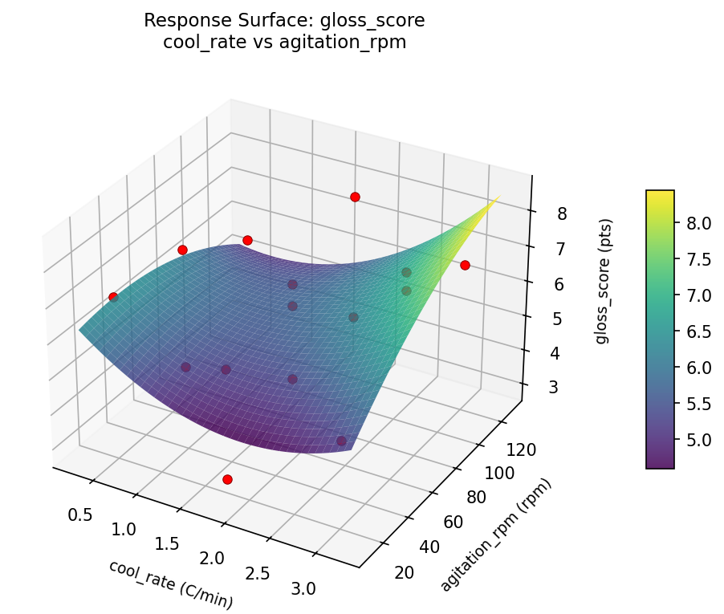
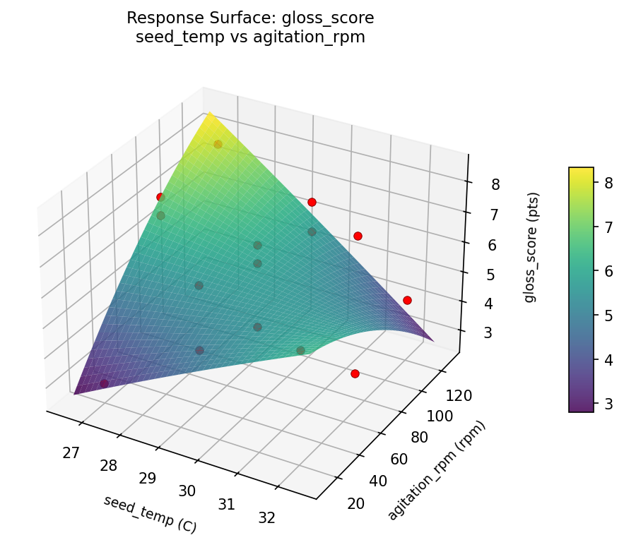
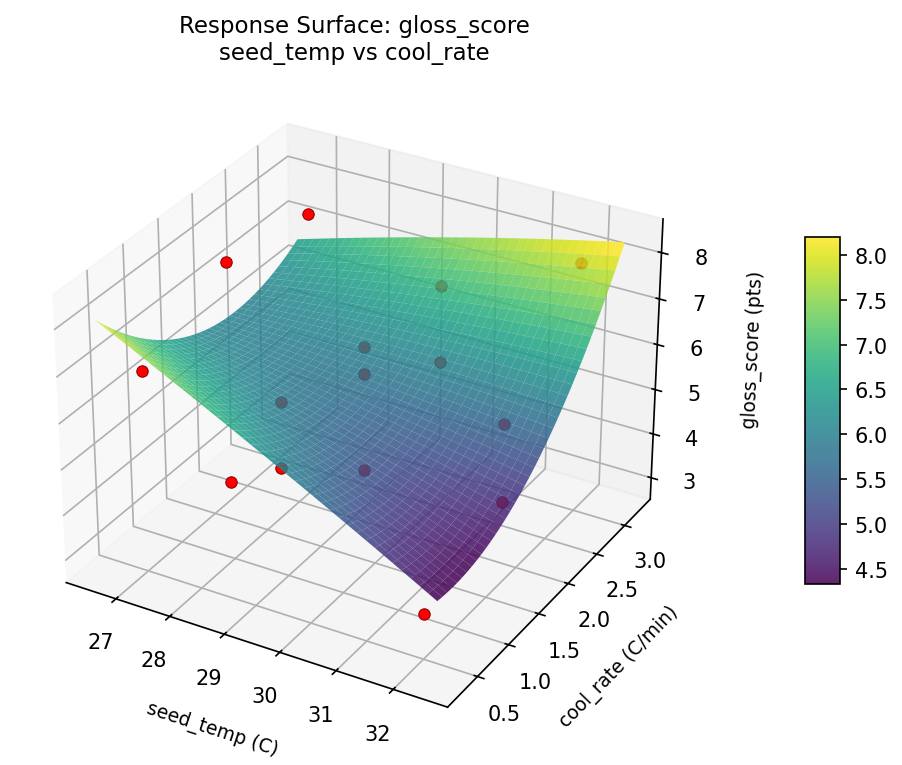
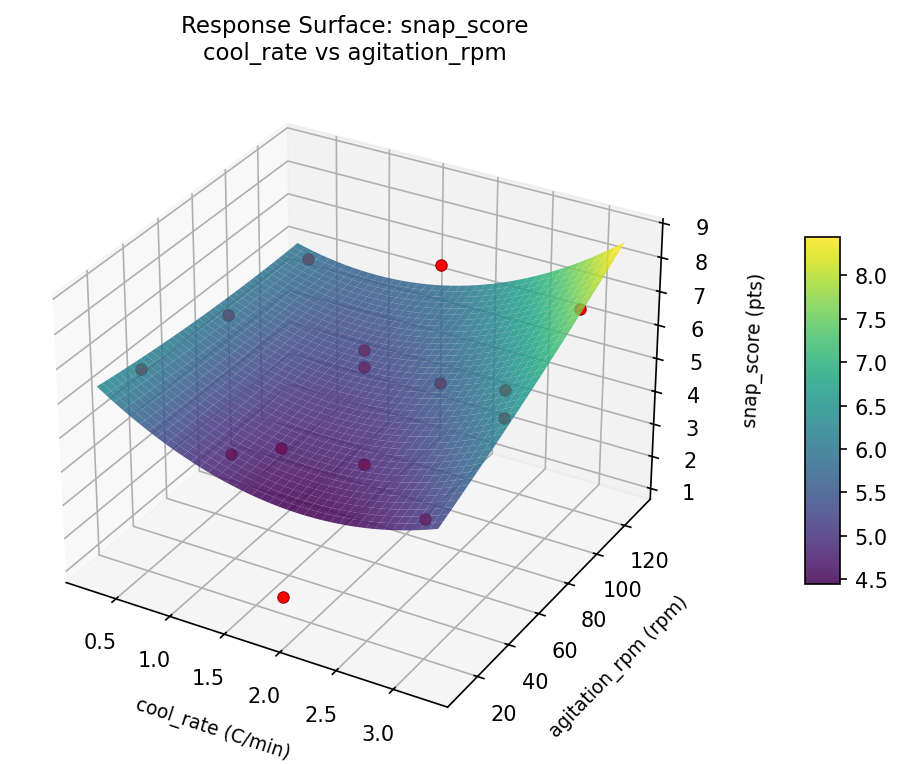
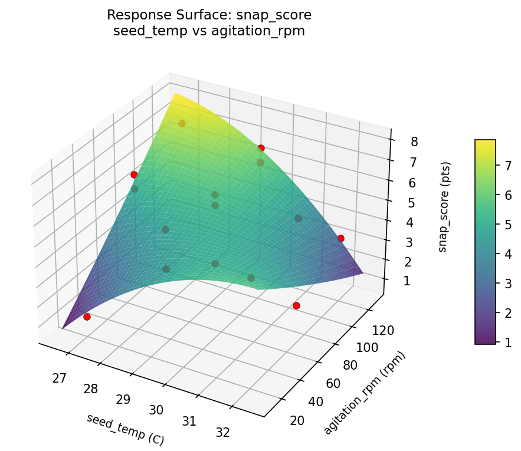
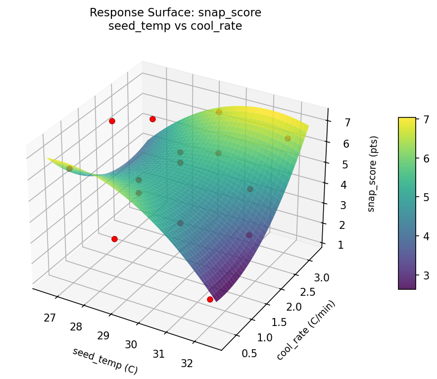

Summary
This experiment investigates chocolate tempering process. Box-Behnken design to optimize snap quality and gloss by tuning seed temperature, cooling rate, and agitation speed.
The design varies 3 factors: seed temp (C), ranging from 27 to 32, cool rate (C/min), ranging from 0.5 to 3.0, and agitation rpm (rpm), ranging from 20 to 120. The goal is to optimize 2 responses: snap score (pts) (maximize) and gloss score (pts) (maximize). Fixed conditions held constant across all runs include cocoa pct = 70, cocoa butter pct = 35.
A Box-Behnken design was chosen because it efficiently fits quadratic models with 3 continuous factors while avoiding extreme corner combinations — requiring only 15 runs instead of the 8 needed for a full factorial at two levels.
Quadratic response surface models were fitted to capture potential curvature and factor interactions. The RSM contour plots below visualize how pairs of factors jointly affect each response.
Key Findings
For snap score, the most influential factors were seed temp (40.5%), agitation rpm (36.5%), cool rate (23.0%). The best observed value was 7.0 (at seed temp = 29.5, cool rate = 0.5, agitation rpm = 20).
For gloss score, the most influential factors were seed temp (44.9%), agitation rpm (32.0%), cool rate (23.0%). The best observed value was 8.0 (at seed temp = 32, cool rate = 0.5, agitation rpm = 70).
Recommended Next Steps
- Run confirmation experiments at the predicted optimal settings to validate the model.
- Consider whether any fixed factors should be varied in a future study.
Experimental Setup
Factors
| Factor | Low | High | Unit |
|---|
seed_temp | 27 | 32 | C |
cool_rate | 0.5 | 3.0 | C/min |
agitation_rpm | 20 | 120 | rpm |
Fixed: cocoa_pct = 70, cocoa_butter_pct = 35
Responses
| Response | Direction | Unit |
|---|
snap_score | ↑ maximize | pts |
gloss_score | ↑ maximize | pts |
Configuration
{
"metadata": {
"name": "Chocolate Tempering Process",
"description": "Box-Behnken design to optimize snap quality and gloss by tuning seed temperature, cooling rate, and agitation speed"
},
"factors": [
{
"name": "seed_temp",
"levels": [
"27",
"32"
],
"type": "continuous",
"unit": "C"
},
{
"name": "cool_rate",
"levels": [
"0.5",
"3.0"
],
"type": "continuous",
"unit": "C/min"
},
{
"name": "agitation_rpm",
"levels": [
"20",
"120"
],
"type": "continuous",
"unit": "rpm"
}
],
"fixed_factors": {
"cocoa_pct": "70",
"cocoa_butter_pct": "35"
},
"responses": [
{
"name": "snap_score",
"optimize": "maximize",
"unit": "pts"
},
{
"name": "gloss_score",
"optimize": "maximize",
"unit": "pts"
}
],
"settings": {
"operation": "box_behnken",
"test_script": "use_cases/90_chocolate_tempering/sim.sh"
}
}
Experimental Matrix
The Box-Behnken Design produces 15 runs. Each row is one experiment with specific factor settings.
| Run | seed_temp | cool_rate | agitation_rpm |
|---|
| 1 | 29.5 | 0.5 | 20 |
| 2 | 29.5 | 1.75 | 70 |
| 3 | 32 | 1.75 | 120 |
| 4 | 32 | 1.75 | 20 |
| 5 | 29.5 | 1.75 | 70 |
| 6 | 29.5 | 1.75 | 70 |
| 7 | 27 | 1.75 | 120 |
| 8 | 32 | 0.5 | 70 |
| 9 | 29.5 | 0.5 | 120 |
| 10 | 32 | 3 | 70 |
| 11 | 27 | 1.75 | 20 |
| 12 | 29.5 | 3 | 120 |
| 13 | 27 | 0.5 | 70 |
| 14 | 27 | 3 | 70 |
| 15 | 29.5 | 3 | 20 |
Step-by-Step Workflow
1
Preview the design
$ python doe.py info --config use_cases/90_chocolate_tempering/config.json
2
Generate the runner script
$ python doe.py generate --config use_cases/90_chocolate_tempering/config.json \
--output use_cases/90_chocolate_tempering/results/run.sh --seed 42
3
Execute the experiments
$ bash use_cases/90_chocolate_tempering/results/run.sh
4
Analyze results
$ python doe.py analyze --config use_cases/90_chocolate_tempering/config.json
5
Get optimization recommendations
$ python doe.py optimize --config use_cases/90_chocolate_tempering/config.json
6
Multi-objective optimization
With 2 competing responses, use --multi to find the best compromise via Derringer–Suich desirability.
$ python doe.py optimize --config use_cases/90_chocolate_tempering/config.json --multi
7
Generate the HTML report
$ python doe.py report --config use_cases/90_chocolate_tempering/config.json \
--output use_cases/90_chocolate_tempering/results/report.html
Features Exercised
| Feature | Value |
|---|
| Design type | box_behnken |
| Factor types | continuous (all 3) |
| Arg style | double-dash |
| Responses | 2 (snap_score ↑, gloss_score ↑) |
| Total runs | 15 |
Analysis Results
Generated from actual experiment runs using the DOE Helper Tool.
Response: snap_score
Top factors: seed_temp (40.5%), agitation_rpm (36.5%), cool_rate (23.0%).
Pareto Chart

Main Effects Plot

Response: gloss_score
Top factors: seed_temp (44.9%), agitation_rpm (32.0%), cool_rate (23.0%).
Pareto Chart

Main Effects Plot

Response Surface Plots
3D surfaces fitted with quadratic RSM. Red dots are observed data points.
gloss score cool rate vs agitation rpm

gloss score seed temp vs agitation rpm

gloss score seed temp vs cool rate

snap score cool rate vs agitation rpm

snap score seed temp vs agitation rpm

snap score seed temp vs cool rate

Multi-Objective Optimization
When responses compete, Derringer–Suich desirability finds the best compromise.
Each response is scaled to a 0–1 desirability, then combined via a weighted geometric mean.
Overall Desirability
D = 1.0000
Per-Response Desirability
| Response | Weight | Desirability | Predicted | Dir |
|---|
snap_score |
1.5 |
|
7.60 1.0000 7.60 pts |
↑ |
gloss_score |
1.5 |
|
9.36 1.0000 9.36 pts |
↑ |
Recommended Settings
| Factor | Value |
|---|
seed_temp | 27 C |
cool_rate | 2.75 C/min |
agitation_rpm | 120 rpm |
Source: from RSM model prediction
Trade-off Summary
Sacrifice = how much worse than single-objective best.
| Response | Predicted | Best Observed | Sacrifice |
|---|
gloss_score | 9.36 | 8.00 | -1.36 |
Top 3 Runs by Desirability
| Run | D | Factor Settings |
|---|
| #3 | 0.9063 | seed_temp=27, cool_rate=1.75, agitation_rpm=120 |
| #2 | 0.8489 | seed_temp=27, cool_rate=1.75, agitation_rpm=20 |
Model Quality
| Response | R² | Type |
|---|
gloss_score | 0.6867 | quadratic |
Full Multi-Objective Output
============================================================
MULTI-OBJECTIVE OPTIMIZATION
Method: Derringer-Suich Desirability Function
============================================================
Overall desirability: D = 1.0000
Response Weight Desirability Predicted Direction
---------------------------------------------------------------------
snap_score 1.5 1.0000 7.60 pts ↑
gloss_score 1.5 1.0000 9.36 pts ↑
Recommended settings:
seed_temp = 27 C
cool_rate = 2.75 C/min
agitation_rpm = 120 rpm
(from RSM model prediction)
Trade-off summary:
snap_score: 7.60 (best observed: 7.00, sacrifice: -0.60)
gloss_score: 9.36 (best observed: 8.00, sacrifice: -1.36)
Model quality:
snap_score: R² = 0.6754 (quadratic)
gloss_score: R² = 0.6867 (quadratic)
Top 3 observed runs by overall desirability:
1. Run #9 (D=0.9366): seed_temp=32, cool_rate=1.75, agitation_rpm=20
2. Run #3 (D=0.9063): seed_temp=27, cool_rate=1.75, agitation_rpm=120
3. Run #2 (D=0.8489): seed_temp=27, cool_rate=1.75, agitation_rpm=20
Full Analysis Output
=== Main Effects: snap_score ===
Factor Effect Std Error % Contribution
--------------------------------------------------------------
seed_temp 2.2464 0.4760 40.5%
agitation_rpm 2.0250 0.4760 36.5%
cool_rate 1.2750 0.4760 23.0%
=== ANOVA Table: snap_score ===
Source DF SS MS F p-value
-----------------------------------------------------------------------------
seed_temp 2 13.2480 6.6240 20.487 0.0007
cool_rate 2 4.2455 2.1228 6.565 0.0205
agitation_rpm 2 8.2613 4.1306 12.775 0.0032
Lack of Fit 6 21.1758 3.5293 10.915 0.0863
Pure Error 2 0.6467 0.3233
Error 8 21.8225 0.3233
Total 14 47.5773 3.3984
=== Summary Statistics: snap_score ===
seed_temp:
Level N Mean Std Min Max
------------------------------------------------------------
27 4 5.4250 1.4431 3.4000 6.8000
29.5 7 5.8714 1.3413 3.0000 7.0000
32 4 3.6250 2.4005 1.2000 6.4000
cool_rate:
Level N Mean Std Min Max
------------------------------------------------------------
0.5 4 4.2750 2.6550 1.2000 7.0000
1.75 7 5.4286 1.6317 2.1000 6.8000
3 4 5.5500 1.4387 3.4000 6.4000
agitation_rpm:
Level N Mean Std Min Max
------------------------------------------------------------
120 4 4.2000 1.9511 2.1000 6.1000
20 4 6.2250 0.9946 4.8000 7.0000
70 7 5.0857 2.0383 1.2000 6.7000
=== Main Effects: gloss_score ===
Factor Effect Std Error % Contribution
--------------------------------------------------------------
seed_temp 1.9643 0.4139 44.9%
agitation_rpm 1.4000 0.4139 32.0%
cool_rate 1.0071 0.4139 23.0%
=== ANOVA Table: gloss_score ===
Source DF SS MS F p-value
-----------------------------------------------------------------------------
seed_temp 2 10.2339 5.1170 5.100 0.0373
cool_rate 2 2.5854 1.2927 1.288 0.3273
agitation_rpm 2 3.9200 1.9600 1.953 0.2038
Lack of Fit 6 17.2340 2.8723 2.863 0.2814
Pure Error 2 2.0067 1.0033
Error 8 19.2407 1.0033
Total 14 35.9800 2.5700
=== Summary Statistics: gloss_score ===
seed_temp:
Level N Mean Std Min Max
------------------------------------------------------------
27 4 6.1750 1.3598 4.3000 7.5000
29.5 7 6.5143 1.3607 4.1000 8.0000
32 4 4.5500 1.7407 2.9000 6.8000
cool_rate:
Level N Mean Std Min Max
------------------------------------------------------------
0.5 4 5.2500 2.1794 2.9000 7.8000
1.75 7 6.2571 1.5672 3.5000 8.0000
3 4 5.9250 1.2121 4.3000 6.9000
agitation_rpm:
Level N Mean Std Min Max
------------------------------------------------------------
120 4 5.2000 1.7926 3.5000 7.5000
20 4 6.6000 1.1690 5.0000 7.8000
70 7 5.9000 1.7474 2.9000 8.0000
Optimization Recommendations
=== Optimization: snap_score ===
Direction: maximize
Best observed run: #9
seed_temp = 29.5
cool_rate = 0.5
agitation_rpm = 20
Value: 7.0
RSM Model (linear, R² = 0.4087, Adj R² = 0.2474):
Coefficients:
intercept +5.1533
seed_temp -0.9000
cool_rate -1.0375
agitation_rpm -0.7375
RSM Model (quadratic, R² = 0.6916, Adj R² = 0.1364):
Coefficients:
intercept +5.1667
seed_temp -0.9000
cool_rate -1.0375
agitation_rpm -0.7375
seed_temp*cool_rate -0.9750
seed_temp*agitation_rpm -1.1250
cool_rate*agitation_rpm +0.9000
seed_temp^2 -0.2583
cool_rate^2 +0.4667
agitation_rpm^2 -0.2333
Curvature analysis:
cool_rate coef=+0.4667 convex (has a minimum)
seed_temp coef=-0.2583 concave (has a maximum)
agitation_rpm coef=-0.2333 concave (has a maximum)
Notable interactions:
seed_temp*agitation_rpm coef=-1.1250 (antagonistic)
seed_temp*cool_rate coef=-0.9750 (antagonistic)
cool_rate*agitation_rpm coef=+0.9000 (synergistic)
Predicted optimum (from linear model, at observed points):
seed_temp = 27
cool_rate = 0.5
agitation_rpm = 70
Predicted value: 7.0908
Surface optimum (via L-BFGS-B, linear model):
seed_temp = 27
cool_rate = 0.5
agitation_rpm = 20
Predicted value: 7.8283
Model quality: Weak fit — consider adding center points or using a different design.
Factor importance:
1. cool_rate (effect: 2.1, contribution: 38.8%)
2. seed_temp (effect: 1.8, contribution: 33.6%)
3. agitation_rpm (effect: 1.5, contribution: 27.6%)
=== Optimization: gloss_score ===
Direction: maximize
Best observed run: #3
seed_temp = 32
cool_rate = 0.5
agitation_rpm = 70
Value: 8.0
RSM Model (linear, R² = 0.2594, Adj R² = 0.0574):
Coefficients:
intercept +5.9000
seed_temp -0.5125
cool_rate -0.8375
agitation_rpm -0.4500
RSM Model (quadratic, R² = 0.7271, Adj R² = 0.2359):
Coefficients:
intercept +5.5333
seed_temp -0.5125
cool_rate -0.8375
agitation_rpm -0.4500
seed_temp*cool_rate -1.0750
seed_temp*agitation_rpm -0.6500
cool_rate*agitation_rpm +1.2500
seed_temp^2 -0.1792
cool_rate^2 +1.0208
agitation_rpm^2 -0.1542
Curvature analysis:
cool_rate coef=+1.0208 convex (has a minimum)
seed_temp coef=-0.1792 concave (has a maximum)
agitation_rpm coef=-0.1542 concave (has a maximum)
Notable interactions:
cool_rate*agitation_rpm coef=+1.2500 (synergistic)
seed_temp*cool_rate coef=-1.0750 (antagonistic)
seed_temp*agitation_rpm coef=-0.6500 (antagonistic)
Predicted optimum (from quadratic model, at observed points):
seed_temp = 29.5
cool_rate = 0.5
agitation_rpm = 20
Predicted value: 8.9375
Surface optimum (via L-BFGS-B, quadratic model):
seed_temp = 32
cool_rate = 0.5
agitation_rpm = 20
Predicted value: 9.9708
Model quality: Good fit — general trends are captured, some noise remains.
Factor importance:
1. cool_rate (effect: 1.9, contribution: 49.4%)
2. seed_temp (effect: 1.0, contribution: 26.9%)
3. agitation_rpm (effect: 0.9, contribution: 23.6%)